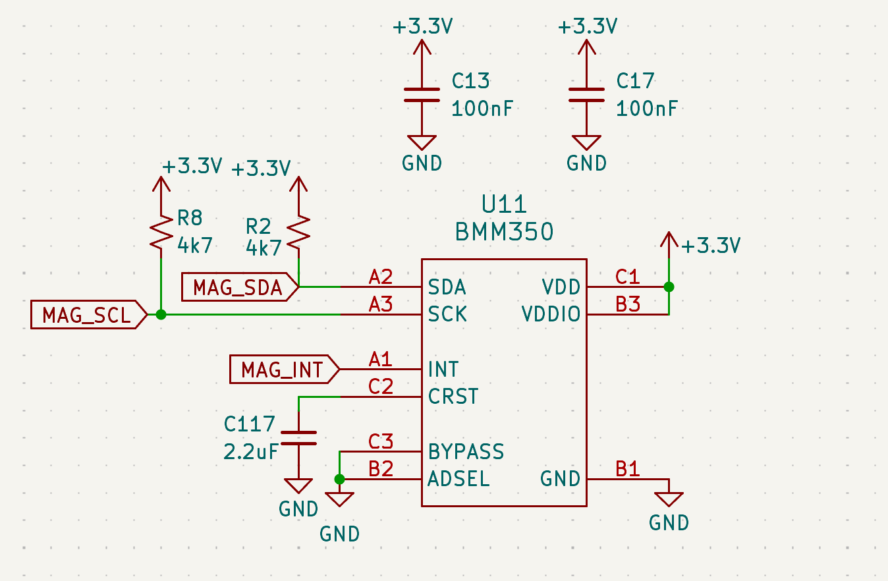
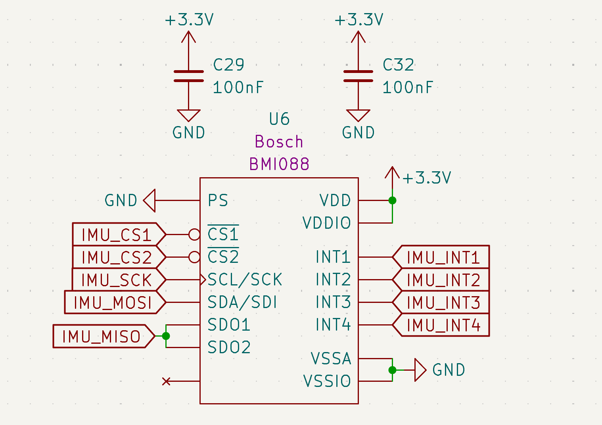
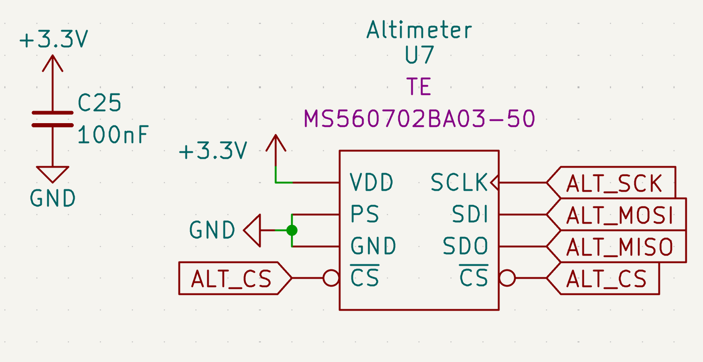
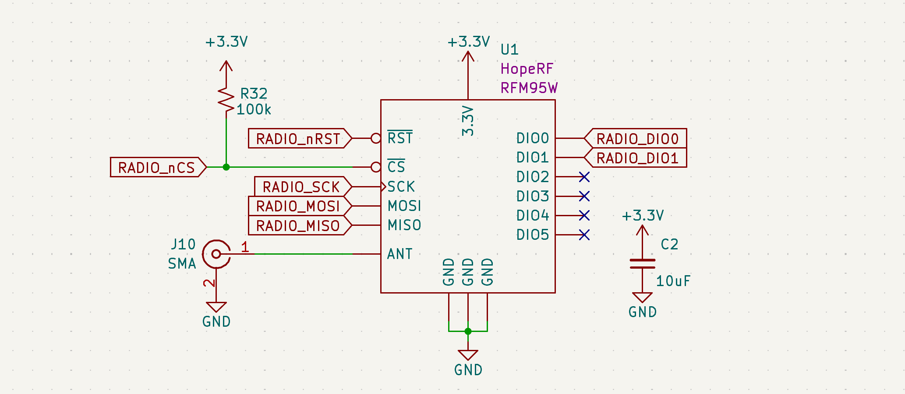
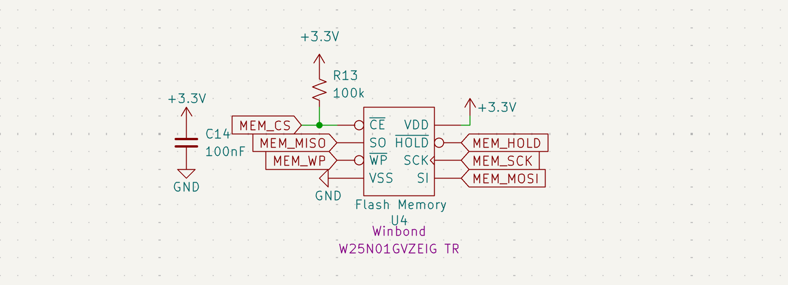
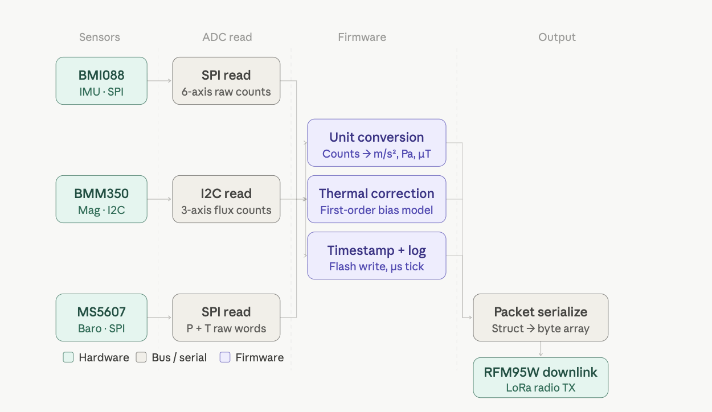

Sensors & Calibration
The AFS v3.0 utilizes a precision sensor cluster isolated from high-noise radio and power switching zones. Since this board is designed for data collection and dynamic flight conditions, sensor integrity and thermal stability are the primary design drivers.
** P.S: I wrote the driver code for the BMM350 Magnetometer and the 1Gb Flash Memory :P
Sensor Architecture
The AFS features an isolated sensor bus to prevent digital noise from the TRS radio module from coupling into sensitive measurements.
| Sensor | Role | Protocol | Key Feature | Datasheet |
|---|---|---|---|---|
| BMM350 | Magnetometer | I2C | TMR Technology for thermal stability | Bosch BMM350 |
| BMI088 | 6-DOF IMU | SPI | Vibration Robustness | Bosch BMI088 |
| MS5607 | Altimeter | SPI | High-resolution barometric sensing | TE MS5607 |
Hardware Architecture & Signal Integrity
To secure data during the high-vibration environment of a liquid-rocket launch, sensors will be grouped in a dedicated zone on the board.
- Isolation: The sensor bus is physically separated from the TRS radio module and high-current ignition traces to prevent EMI coupling.
- Power Conditioning: Each IC has localized decoupling (the 0.1μF and 1μF pairs) placed adjacent to VDD pins to suppress high-frequency ripple.
- Bus Optimization:
- I2C: PU resistors (R-values tuned to 2.2kΩ) ensure sharp rise times at 400kHz, compensating for the trace capacitance of the 4-layer stack.
- SPI: The protocol select pins are pulled high to force SPI mode and enable the high data throughput necessary for real-time flight control.
Individual Component Logic
BMM350 Magnetometer (U11)

Figure 8: BMM350 WLCSP implementation with optimized decoupling and I2C pull-ups.- Design Choice: Uses WLCSP footprint to minimize board space.
- Logic Review: Includes 2.2μF bypass capacitor (C117) on the VDDIO rail to buffer peak currents during sensing cycles.
BMI088 6-DOF IMU (U6)

Figure 9: BMI088 Automotive-grade IMU with dual-chip SPI interface.- Design Choice: Selected for its high grade vibration damping, critical for maintaining IMU lock during the rocket's ascent.
- Logic Review: To minimize digital crosstalk, the accelerometer and gyroscope operate as independent SPI devices with dedicated Chip Selects (
IMU_CS1,IMU_CS2).
MS5607-02BA03 Altimeter (U7)

Figure 10: MS5607 Barometric pressure sensor utilizing high-speed SPI mode.- Design Choice: Chosen for its superior pressure resolution, which is vital for detecting "Apogee" (zero vertical velocity) for parachute deployment.
- Logic Review: Shielded from EMI via a local 100nF decoupling capacitor (C25).
Thermal Drift Mitigation
-
TMR Stability: Unlike usual Hall-effect sensors, the BMM350’s Tunnel Magnetoresistance tech ensures inherent stability across extreme thermal gradients present in a rocket body.
-
Firmware Compensation: I leverage the BMI088’s internal temperature sensor to apply a first-order thermal compensation model to the accelerometer data, correcting for bias shifts in real-time.
Calibration & Drift Management
Environmental factors at high altitudes (up to -50°C) require active mitigation strategies to prevent navigation drift.
Telemetry & Data Persistence
TRS Radio Module (U1)

Figure 12: RFM95W LoRa module for long-range telemetry downlink.Logic Review: The radio interface is handled via SPI. I've included a 100kΩ pull-up (R32) on the Chip Select line to ensure the radio remains inactive during MCU reset, preventing bus contention. * RF: The ANT pin is routed to an SMA connector (J10), so for this application the system is designed to utilize a 1/4 wave whip antenna that's tuned for the 915MHz ISM band. This ensures optimal impedance matching and maximizes the link budget for long-range data transmission!
Flash Memory (U4)

Figure 13: Winbond 1Gb Flash for high-reliability flight data logging.Logic Review: To ensure data integrity during high-vibration flight phases, the WP (Write Protect) and HOLD pins are tied to the 3.3V rail. A 100nF decoupling capacitor (C14) is placed adjacent to the VCC pin to filter switching noise.
Data Flow Diagram

Figure 11: Digital signal processing pipeline from raw sensor ADC values to filtered telemetry.